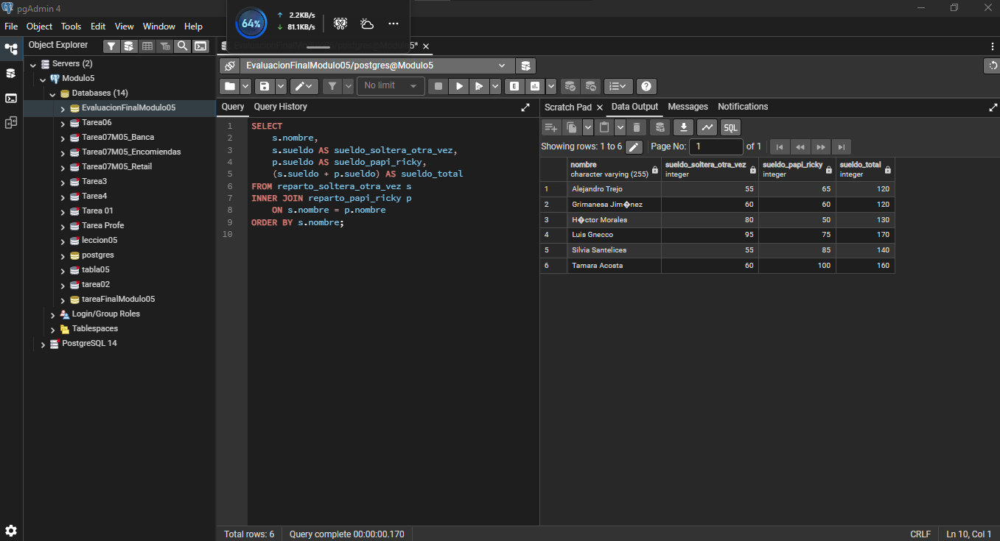
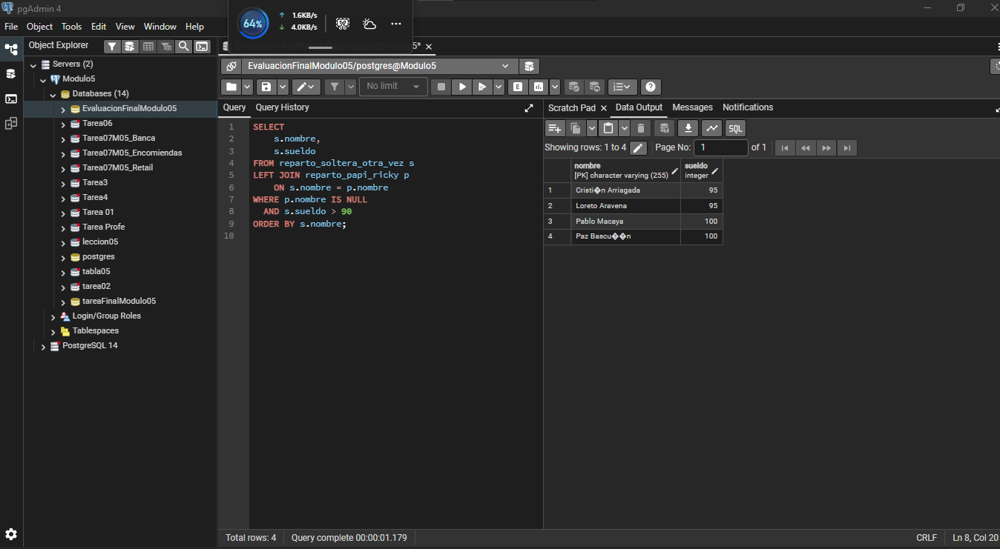
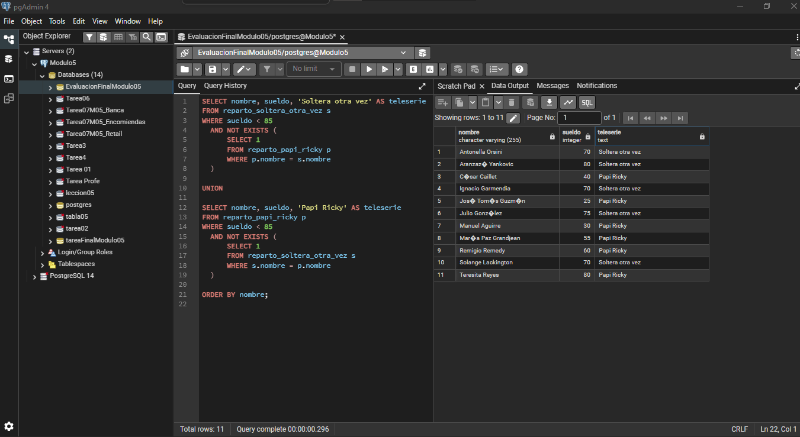
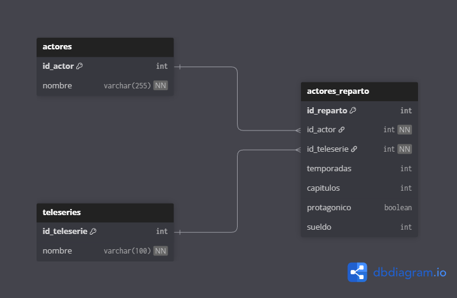
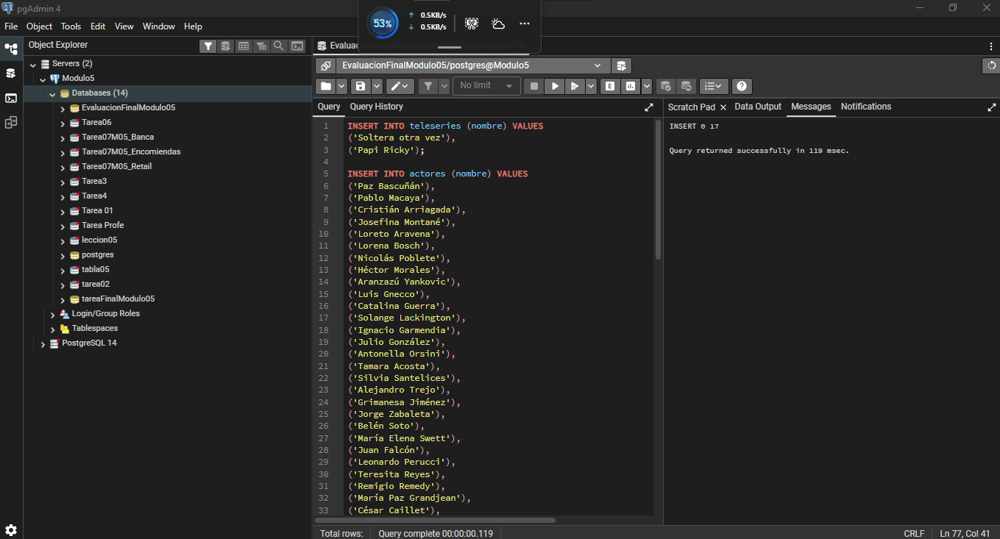
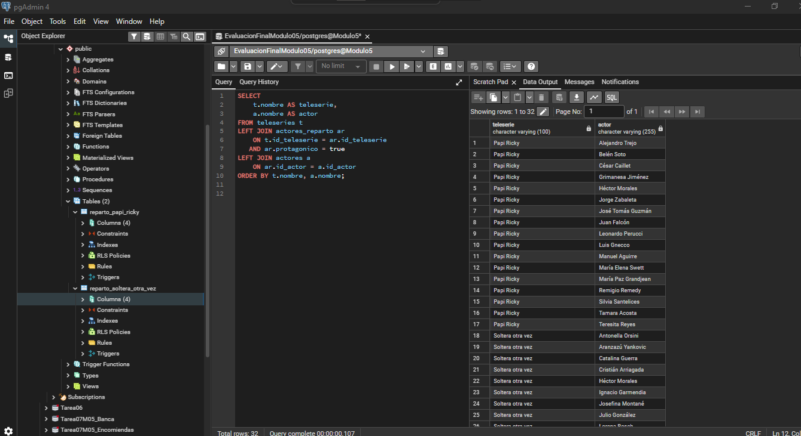

Actividad de Aprendizaje – SQL
Evidencia de consultas SQL ejecutadas en PostgreSQL utilizando pgAdmin 4 y VS Code.
Evaluacion final módulo 5 | Curso de Desarrollo Fullstack con Javascript
1. Actores que participaron en ambas teleseries, sueldo que obtuvieron en cada una y suma de ambos sueldos

2. actores que participaron exclusivamente en soltera otra vez, con un sueldo mayor a 90.

3. Actores con sueldo inferior a 85 que actuaron en cualquiera de las dos teleseries, pero no en las dos.

PARTE 2: MODELO ENTIDAD RELACIÓN
1. Diagrama E - R | Normalizado

2. Script SQL del proyecto
Cargando SQL...3. Poblamiento de Tablas.

3. Consulta que muestre todas las teleseries y todos los actores de reparto asociados. No incluya los actores de rol secundario.
